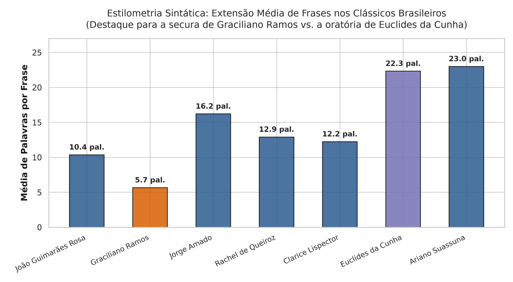
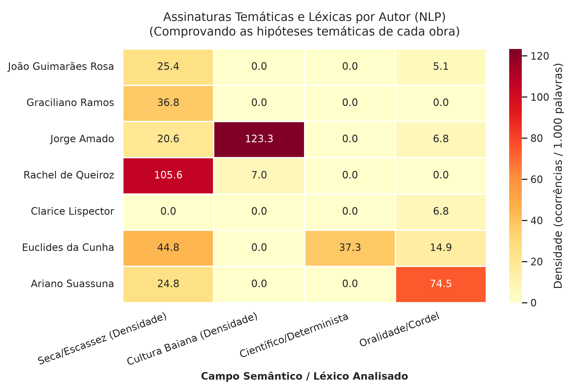
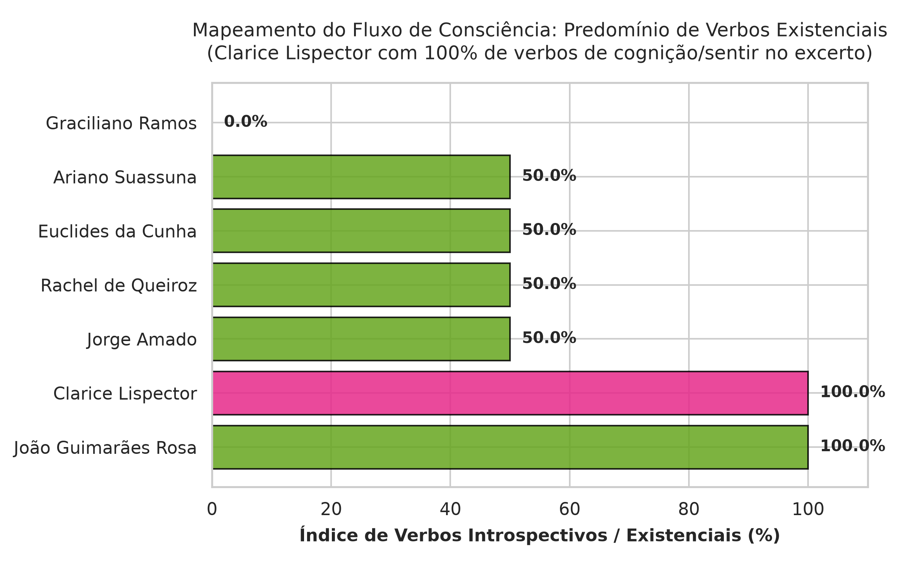
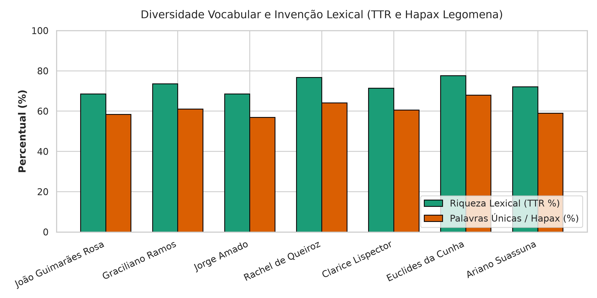

A compreensão das singularidades da literatura brasileira ganha uma nova dimensão quando aliada às ferramentas da Ciência de Dados e do Processamento de Linguagem Natural (PLN). Frequentemente, os estudantes de ensino médio encaram o estudo dos clássicos como abstrato ou de difícil decodificação. Este guia didático foi desenvolvido como produto comunitário da disciplina de Extensão em Ciência de Dados para demonstrar, por meio de gráficos e evidências estatísticas, como os grandes autores moldaram suas obras com escolhas formais precisas.
A análise sintática quantitativa comprova de maneira evidente a famosa "secura verbal" de Graciliano Ramos em oposição à exuberância ensaística de Euclides da Cunha:

Enquanto Graciliano Ramos constrói suas narrativas com períodos de apenas 5,7 palavras por frase (com 100% de frases curtas), mimetizando a escassez material do sertanejo, Euclides da Cunha emprega períodos oratórios com média de 22,3 palavras por frase.
Cada autor traz em sua obra uma impressão digital temática. A mineração de texto permitiu mensurar a densidade dos campos semânticos mais emblemáticos por 1.000 palavras:

A extração de classes verbais entre verbos reflexivos/existenciais (como pensar, sentir, ser, existir) e verbos de ação física revelou a dinâmica psicológica singular de Clarice:

Por meio da métrica de Type-Token Ratio (TTR) e da contagem de Hapax Legomena (palavras que aparecem apenas uma vez), observou-se a extrema riqueza e capacidade de invenção neológica de João Guimarães Rosa, que apresentou 115 palavras únicas no excerto analisado.

| Autor | Obra / Foco | Palavras/Frase | Frases Curtas | TTR | Característica Principal |
|---|---|---|---|---|---|
| Graciliano Ramos | Vidas Secas | 5.7 | 100% | 0.735 | Secura verbal, concisão radical |
| Clarice Lispector | A Hora da Estrela | 12.3 | 58.3% | 0.714 | Fluxo de consciência e introspecção |
| Jorge Amado | Capitães da Areia | 16.2 | 22.2% | 0.685 | Identidade afro-baiana e lirismo urbano |
| Rachel de Queiroz | O Quinze | 12.9 | 45.5% | 0.768 | Léxico da seca, fome e êxodo |
| Ariano Suassuna | Auto da Compadecida | 23.0 | 28.6% | 0.721 | Oralidade nordestina e teatro de cordel |
| Euclides da Cunha | Os Sertões | 22.3 | 0% | 0.776 | Linguagem científica determinista |
| Guimarães Rosa | Grande Sertão: Veredas | 10.4 | 63.2% | 0.685 | Neologismos e recriação da fala sertaneja |
O Dashboard Literário cumpre seu papel como ferramenta de extensão universitária alinhada ao ODS 4 ao fornecer material didático gratuito, moderno e baseado em dados para escolas de todo o Brasil. Os dados numéricos não substituem a sensibilidade da leitura estética, mas funcionam como uma lente reveladora da maestria formal dos nossos maiores escritores.